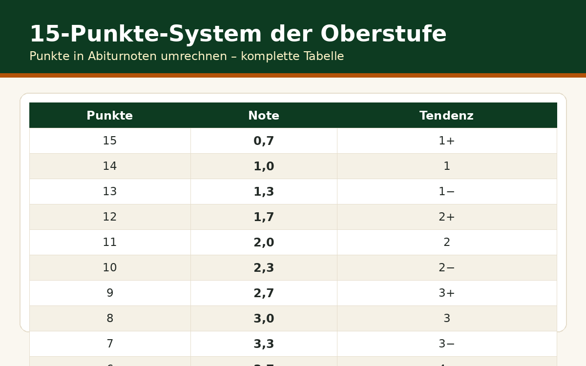

Notenschnitt am zweiten Bildungsweg berechnen
Ob Abendgymnasium, Kolleg oder Externenprüfung – früher oder später stellt sich die Frage: Wo stehe ich, und was muss ich noch holen? Wir von Notenrechner Online zeigen, wie der Abiturschnitt auf dem zweiten Bildungsweg berechnet wird, wo sich die Wege unterscheiden – und rechnen zwei komplette Beispiele durch. Wer es eilig hat, nutzt direkt unseren Rechner für den Notendurchschnitt.
Das Grundsystem: Block I und Block II
Am Abendgymnasium und am Kolleg gilt exakt dasselbe System wie am regulären Gymnasium. Block I fasst die Leistungen der Qualifikationsphase zusammen: 200 bis 600 Punkte aus den eingebrachten Kursen. Block II kommt aus den Abiturprüfungen: 100 bis 300 Punkte. Zusammen ergeben sich 300 bis 900 Punkte, die in die Abiturnote umgerechnet werden. Die Faustformel für die Umrechnung: Ab 300 Punkten ist das Abitur bestanden (Note 4,0), jede Stufe von etwa 30 Punkten verbessert die Note um ein Zehntel.
| Punkte | Abinote | Punkte | Abinote |
|---|---|---|---|
| 823 – 900 | 1,0 | 553 – 582 | 2,5 |
| 793 – 822 | 1,1 | 523 – 552 | 2,6 |
| 763 – 792 | 1,2 | 493 – 522 | 2,7 |
| 733 – 762 | 1,3 | 463 – 492 | 2,8 |
| 703 – 732 | 1,4 | 433 – 462 | 2,9 |
| 673 – 702 | 1,5 | 403 – 432 | 3,0 |
| 643 – 672 | 1,6 | 373 – 402 | 3,1 |
| 613 – 642 | 1,7 | 343 – 372 | 3,2 |
| 583 – 612 | 1,8 | 313 – 342 | 3,3 |
| 300 – 312 | 4,0 | unter 300 | nicht bestanden |
Sonderfall Externenprüfung: Nur die Prüfung zählt
Bei der Externenprüfung entfällt Block I. Die 8 Prüfungsfächer werden in der Regel vierfach gewertet; die Summe ergibt direkt die Punktzahl für die Notentabelle oben. Das bedeutet: 8 Fächer × 15 Punkte × 4 = maximal 720 Punkte – die Notenskala bleibt dieselbe, aber der Weg dorthin ist ein anderer. Details dazu stehen auf der Externenprüfungs-Seite.
Claudia (34) hat in der Qualifikationsphase 35 Kurse eingebracht mit durchschnittlich 8 Punkten: 35 × 8 = 280 Kurspunkte. Block I: 280 × 40/35 = 320 Punkte. In den Abiturprüfungen holt sie 190 von 300 Punkten. Gesamt: 320 + 190 = 510 Punkte – das entspricht einem Abiturschnitt von etwa 2,7. Hätte sie im Block II 230 Punkte geschafft, wären es 550 Punkte und ein Schnitt von 2,5 gewesen. Diese 40 Punkte Unterschied zeigen, wie viel die Prüfungsphase noch bewegen kann.
Markus (29) tritt zur Externenprüfung an. Seine 8 Prüfungsergebnisse: 10, 9, 11, 8, 10, 7, 12, 9 Punkte – im Schnitt 9,5. Vierfach gewertet: 9,5 × 8 × 4 = 304 Punkte. Das reicht mit einem Schnitt von 4,0 gerade so zum Bestehen. Zwei Fächer mit je 3 Punkten mehr (also Schnitt 10,25) hätten 328 Punkte und einen Schnitt von 3,4 bedeutet. Bei der Externenprüfung zählt jeder einzelne Punkt doppelt und dreifach – es gibt keinen Block-I-Puffer.
Kostenlose Spickzettel & Tabellen zum Download
Wir haben die wichtigsten Formeln und Tabellen für Sie als kostenlose PDFs aufbereitet – ausdrucken, ins Heft kleben, fertig. Alle Downloads sind gratis und ohne Anmeldung.


Häufige Fragen
Zählt der Schnitt vom zweiten Bildungsweg anders bei der Studienplatzvergabe?
Nein. Die Abiturnote ist die Abiturnote – egal, ob vom Gymnasium, Abendgymnasium, Kolleg oder per Externenprüfung. Bei der Hochschulzulassung (auch bei NC-Fächern) wird nur die Note gewertet, nicht der Weg.
Kann ich Kurse aus meiner früheren Schulzeit anrechnen lassen?
In der Regel nein – die Qualifikationsphase muss am zweiten Bildungsweg vollständig durchlaufen werden. Ausnahmen gibt es beim Wechsel zwischen Abendgymnasium und Kolleg innerhalb eines Bundeslandes.
Was ist ein Unterkurs und wie viele darf ich haben?
Ein Unterkurs ist ein Kurs mit weniger als 5 Punkten. Je nach Bundesland dürfen nur eine begrenzte Zahl davon in Block I eingebracht werden (oft maximal 7 bis 8). Mehr Unterkurse gefährden das Bestehen.
Wie berechne ich meinen aktuellen Stand während der Qualifikationsphase?
Addieren Sie Ihre bisherigen Kurspunkte, teilen Sie durch die Kurszahl und multiplizieren Sie mit 40/35 (bzw. dem Faktor Ihres Bundeslandes). Unser Notendurchschnitt-Rechner nimmt Ihnen diese Rechnung ab.
Kann man die Abiturprüfung wiederholen, um den Schnitt zu verbessern?
Eine bestandene Abiturprüfung kann man nicht einfach zur Notenverbesserung wiederholen. Möglich ist nur die Wiederholung bei Nichtbestehen. Wer einen besseren Schnitt will, muss ihn sich in Block I und II erarbeiten.
Rechnen Sie Ihren Stand aus: Punkte eintragen, Schnitt sofort sehen.
Notendurchschnitt berechnen